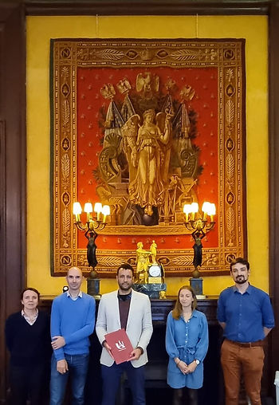
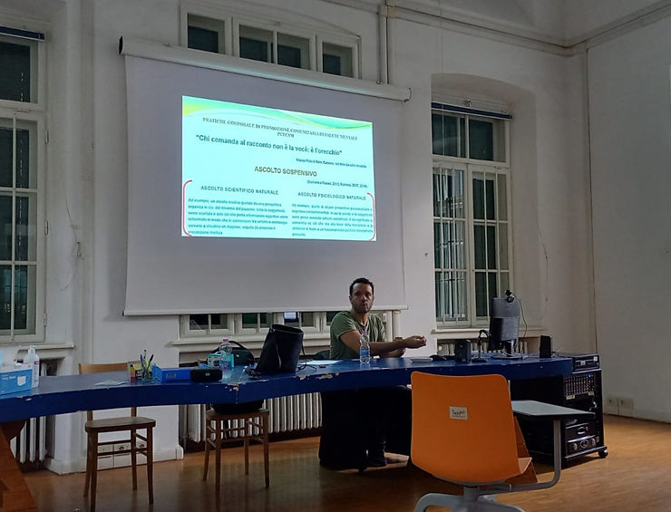
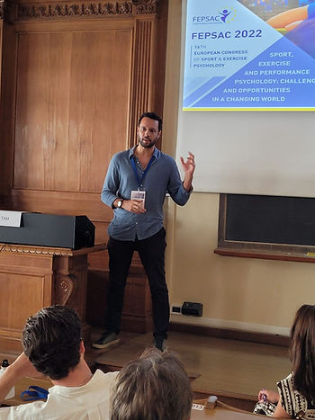
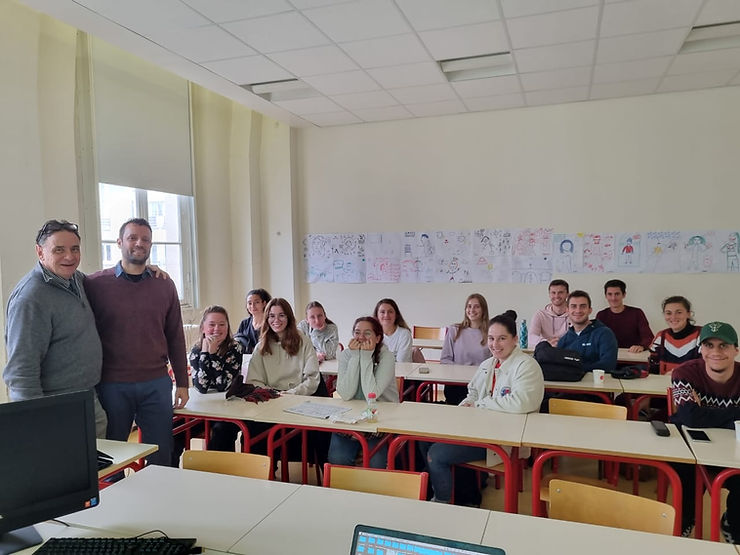

Revisando o lugar da Psicologia do Esporte Brasileira no mundo

Falar de Psicologia do Esporte é tratar de um campo de atuação que, para além do Brasil, também se faz presente em outros países e realidades do mundo. Por isso, destacamos aqui o trabalho desenvolvido por Cristiano Roque Antunes Barreira – associado e ex-presidente da ABRAPESP – em suas ações e parcerias internacionais na área em termos da revisão do “lugar de fala” que a Psicologia do Esporte Brasileira ocupa na relação com todos demais países do mundo.
Cristiano Barreira é professor titular da Universidade de São Paulo (USP) na Escola de Educação Física e Esporte de Ribeirão Preto (EEFERP-USP). Ao conhecer mais sua carreira, que ele mesmo caracteriza como eminentemente acadêmica, percebemos que a internacionalização está prestes a completar duas décadas em 2023. Em seu doutorado em Psicologia pela Faculdade de Filosofia Ciências e Letras de Ribeirão Preto USP, fez estágios pela Università Lateranense (Roma) e Université de la Sorbonne (Paris) entre os de 2003 e 2004, quando defendeu sua tese. Recentemente foi Professor Visitante na Universidade de Bordeaux em 2019 (Programa ERASMUS) e Pesquisador Visitante na Universidade Paris-Cité (2022), atuando também como conferencista convidado em diferentes instituições, como a Universidade de Perugia, Itália.

Atualmente, suas pesquisas junto a seus orientandos são na área da Psicologia do Esporte e com diferentes temas, mas principalmente em torno das Artes Marciais e Esportes de Combate, e sempre na perspectiva fenomenológica.

Com todo esse knowhow, Cristiano tem participado com regularidade dos congressos da International Society of Sport Psychology (ISSP) e da European Federation of Sport Psychology (FEPSAC). Ambas instituições de grande peso internacional: ISSP uma das sociedades pioneiras em Psicologia do Esporte e a FEPSAC com mais de 50 anos de existência. Em suas participações, Cristiano levou por meio de seus trabalhos um pouco da Psicologia do Esporte do Brasil para esses fóruns e também trouxe o conhecimento e as tendências mundiais nos âmbitos acadêmicos e de atuação profissional para o Brasil.
Em outro âmbito, através da EEFERP-USP, foi estabelecida uma parceria internacional com o International Centre of Martial Arts for Youth Development and Engagement (ICM) da Organização das Nações Unidas para a Educação, a Ciência e a Cultura (UNESCO). O ICM, sediado na Coreia do Sul, é um escritório especializado da UNESCO que tem como visão contribuir para o bem-estar e coesão da humanidade através das artes marciais. A similaridade entre seus objetivos e a produção acadêmica de Cristiano Barreira e seu grupo de pesquisa oportunizaram a parceria através do convênio entre as instituições. Assim, o conhecimento produzido e debatido na Psicologia do Esporte brasileira encontra na UNESCO um novo canal – que Cristiano gosta de caracterizar como “potencial, ou virtualmente global” – para alcançar e impactar as realidades de praticantes de lutas na direção de seus desenvolvimentos pessoais e psicológicos.
E não pára por aí! Também foi estabelecida a parceria com a Universidade de Bordeaux (França), por meio de convênio com a EEFERP-USP, proporcionando intercâmbio de estudantes e de pesquisas. E está sendo estabelecido o convênio com a Université Paris Cité com o Department of Science and Techniques of Sports and Physical Activities (STAPS), com destaque para as colaborações com o filósofo Bernard Andrieu na produção interdisciplinar entre a Filosofia, Psicologia e Ciências Experimentais.

Cristiano também é associado a International Martial Arts and Combat Sports Scientific Society (IMACSSS), que reúne todas as áreas das ciências do esporte em torno das artes marciais e das lutas corporais. Os congressos anuais promovidos pela instituição congregam as diversas construções científicas das artes marciais, sendo importante palco para que a produção científica brasileira seja apresentada e dialogue com a dos demais países, reafirmando seu espaço e sua rigorosidade, conquistando credibilidade junto a pesquisadores de todos os continentes.
Seríamos redundantes ao dizer da importância de todos estes feitos para a Psicologia do Esporte Brasileira, mas vale ainda aprofundar-se no significado dessas ações na história e construção da Psicologia do Esporte do Brasil. Mesmo já não se tratando mais de uma área de estudos tão jovem no Brasil, não é arriscado dizer que a maturidade de nossa produção desponta para uma nova etapa. E o ponto de virada ocorrera quando houve uma recusa pela mera adoção de teorias desconexas de nossa realidade, engatilhando uma produção contextualizada e socialmente comprometida. E as ações de Cristiano Barreira exemplificam bem o oferecimento de uma Psicologia do Esporte nascida e criada no Brasil, que se apresenta e se afirma no contexto internacional como produção autoral.
É como se aquela virada inicial tivesse se fortalecido para agora mostrar-se autêntica, longe da sombra da produção de países mais tradicionais nestes estudos. Não que seja uma relação competitiva, e sim uma relação na qual a identidade de cada produção possa ser respeitada e representar uma contribuição altiva à produção mundial. Nessa ação, é como se tivéssemos deixado de ser importadores de conhecimento e replicadores de teorias para nos reconhecermos e sermos reconhecidos como quem também pode exportar conhecimento. Uma baita mudança no nosso status enquanto ciência no mundo!
Fica aqui o nosso agradecimento ao Cristiano Barreira, e não só a ele. Expandimos nossos aplausos a todos acadêmicos que se debruçam em suas pesquisas e na construção de conhecimento, fortalecendo a Psicologia do Esporte do Brasil e suas idiossincrasias.